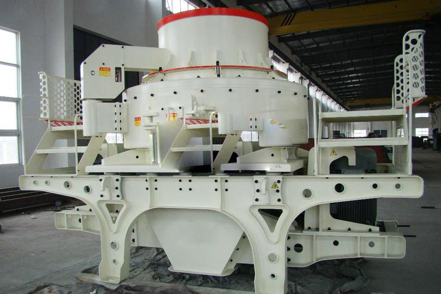

Construction waste crushing production line

Mobile construction waste crushing station for urban construction waste crushing.
Artificial Sand Making Machine
Artificial Sand Making Machine. Cone machine, sand making machine, sand making machine, new Sand, pebbles Sand, sand making equipment, CAG is a professional supplier of new sand making machine, sand making machine, cone machine, pebbles Sand, sand production line Sand sand equipment manufacturers, reliable quality, model and diverse, striving China mining machinery industry leading brands.
Sand machinery, sand making equipment, sand system, Sunaba investment, Sunaba solutions, large set of sand system, CAG main crusher, vibrating screen, sand making machinery, sand making equipment, sand system, Sunaba investment, Sunaba solutions, large set of sand system, sand king, conveyor, sand washing machine, cylindrical screen, sand and environmental protection.

Sand making plant
The Chinese sand making plant or sand making machinery plays an important role in many fields such as the ore exploitation, cement production, refractory matter, bauxite clinker, emery, glass, artificial construction sand, stones and other metallurgy slurry.
Malaysia sand making plant manufacturer. CAG, as the leading sand making plant in China, has successfully designed and made the basalt sand maker which is a high efficient rough sand maker. CAG holds the concept of being the satisfying partner with its excellent product quality, complete product types and outstanding after-sale service and shows the world our self-dependent innovation results and the faith and strength to march to the world.
Sand making equipment is designed to produce building sand, sand highway. Like the third generation of Sand, Sand belong to the fifth generation sand making equipment. In addition, sand making equipment and broken equipment, transportation equipment screening can be composed by a sand production line, sand production line.
Working principle of sand making machine
1. Materials enter the crusher via the feed hopper and are divided to two parts. Some enter the high speed spinning impellor through the distributor and the accelerated speed can be a hundred times of the gravitational acceleration.
2. Then the materials are thrown out from three runners at the speed of 60-70m/s and impact the falling materials from the distributor.
3. Then they come to the lining of the inner cavity and get bounced by the material liner to the upper end of the whirling motion cavity.
4. Then they change the direction to move down. The materials cast from the impellor form a continuous material curtain. In this case, the materials can experience two or more times of impacting and grinding processes. The crushed materials are discharged from the bottom hole of the sand making machine.
5. Forming a closed circuit with the circulation screening system, the vibrating feeder can handle the materials as fine as 20 meshes within three circulations.
6. In the whole crushing process, the materials hit each other without touching the metal components directly. They meet the material lining in order to reduce the pollution and prolong the service life of the sand making machine. The advanced air flow in the whirling motion cavity can effectively reduce the dust pollution.
CAG is a specialized in mining machinery, stone crushing equipment production and research and development of large-scale manufacturers, the main products are sand, sand making equipment, third-generation sand making machine, crusher, crusher equipment, sand production line.
Malaysia sand making plant price. Artificial sand equipment, sand production line equipment, CAG specializing in the production of sand (sand making machine), sand washing machine, sand and other sand recovery equipment, according to Sand mobility, can be divided into PP Series Mobile Sand production line and stand-alone VSI series Sand, are using the most advanced technology.
Leave Me A Message, Now
If you have any questions regarding equipment prices, production line configuration or other problems, you can send a message to us, we will contact you soon.